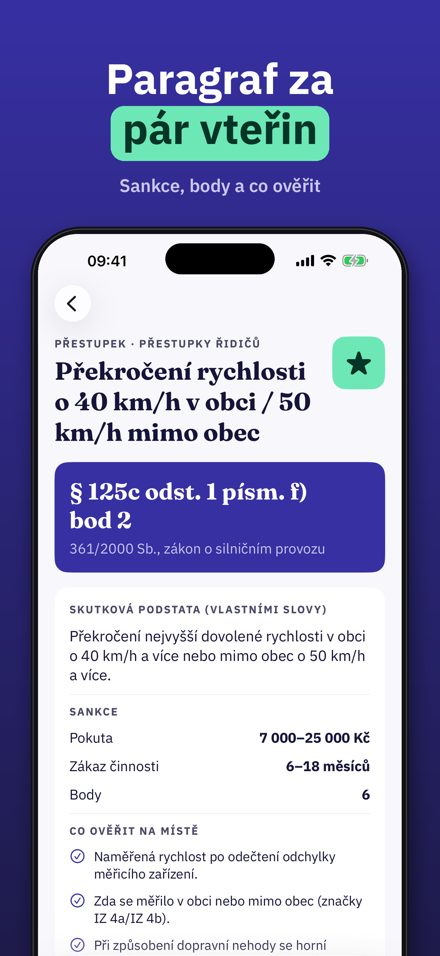
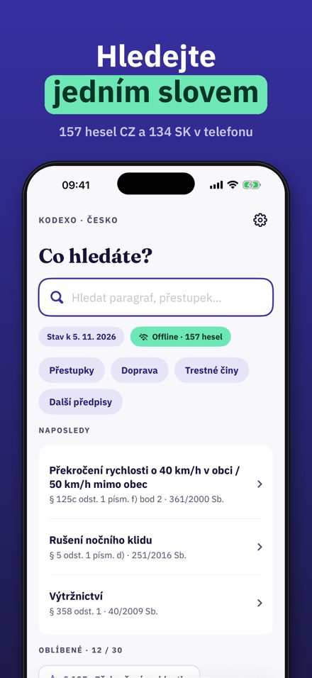
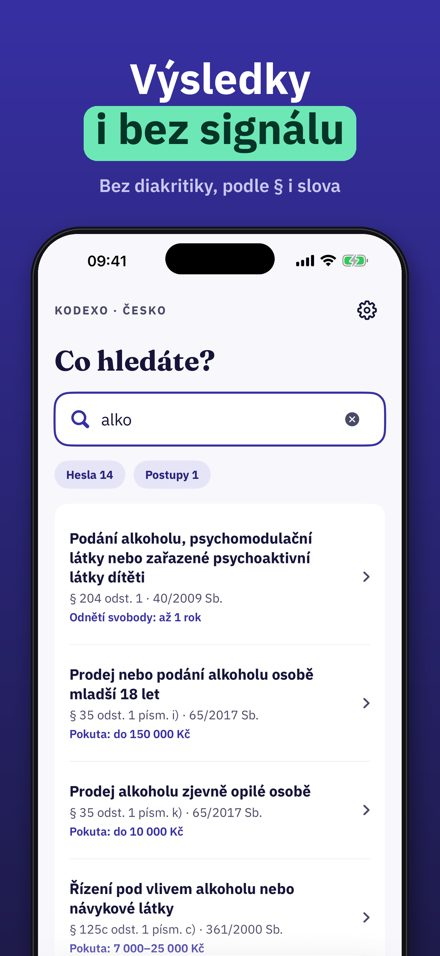
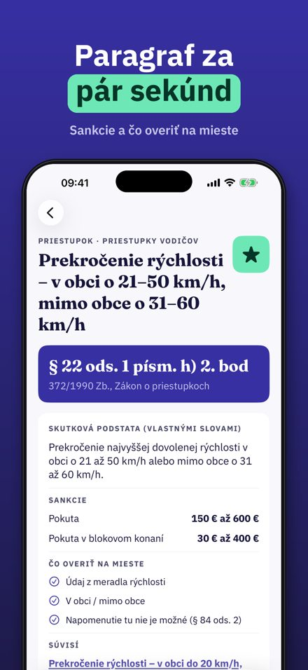
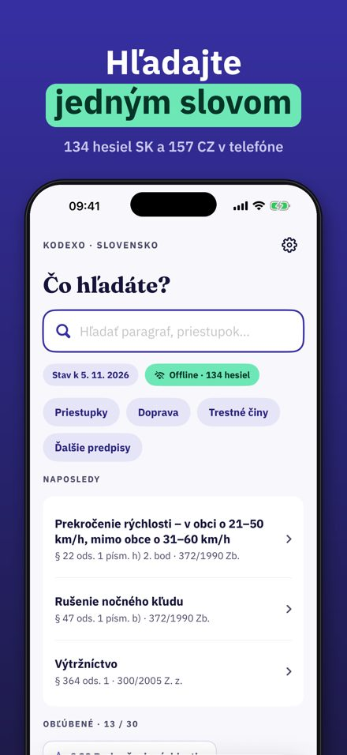
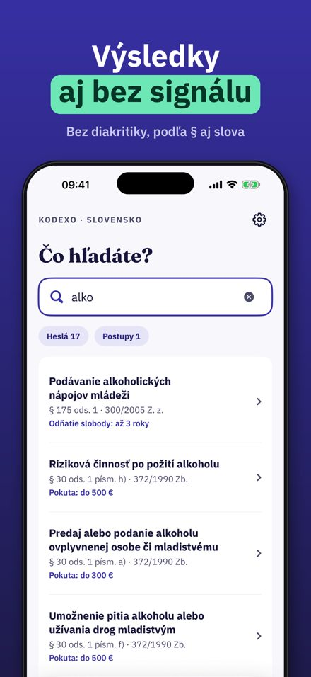

Paragraf, sankce i bez signálu. Napíšete slovo, číslo paragrafu nebo kód značky a během pár vteřin máte heslo: zákon a paragraf, skutkovou podstatu vlastními slovy, rozpětí sankce, body a co ověřit na místě.
Kodexo není oficiální zdroj ani právní rada a nepatří k žádnému úřadu ani sboru. Rozhoduje vždy platné znění zákona.



Paragraf a sankcie aj offline. Napíšete slovo, číslo paragrafu alebo kód značky a za pár sekúnd máte heslo: zákon a paragraf, skutkovú podstatu vlastnými slovami, rozpätie sankcie a čo overiť na mieste.
Kodexo nie je oficiálny zdroj ani právna rada a nepatrí k žiadnemu úradu ani zboru. Rozhoduje vždy platné znenie zákona.


